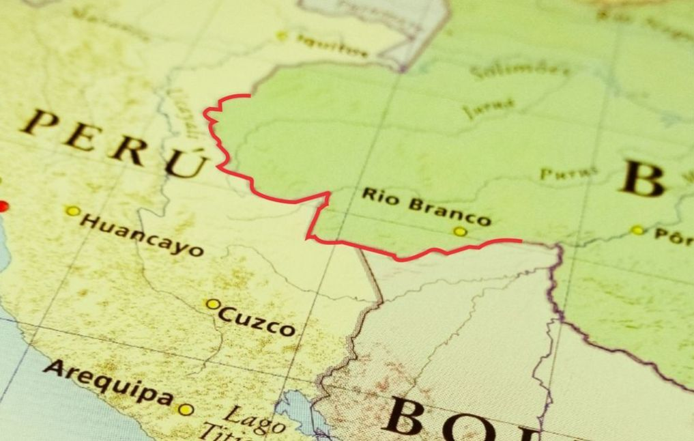
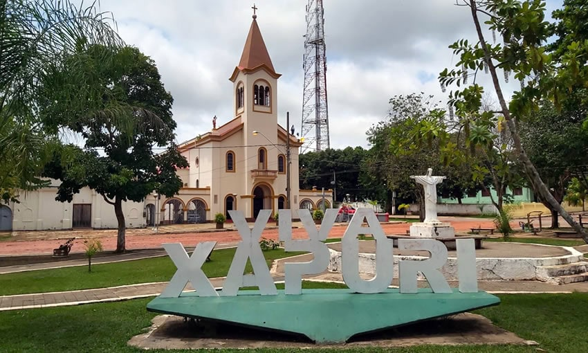
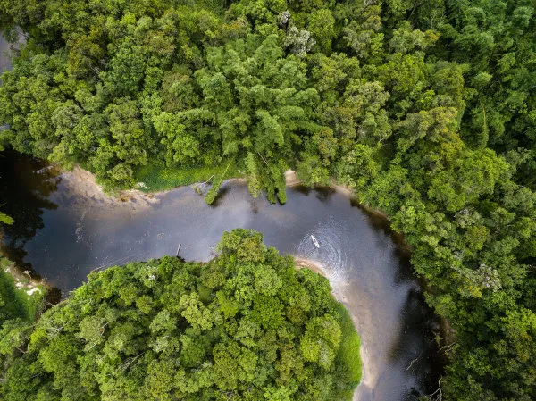

Curiosidades sobre o Acre
1. Limite com a Bolívia
O Acre faz fronteira com a Bolívia, o que influencia fortemente sua cultura e economia. Essa proximidade permite um intercâmbio cultural significativo, com diversas influências bolivianas na música, culinária e festividades.
2. O "Xapuri"
O "Xapuri" é um símbolo histórico do Acre, representando a luta pela emancipação do estado. É uma canção que remete aos sentimentos de resistência e identidade dos acreanos. A música é frequentemente associada à cidade de Xapuri, onde ocorreram importantes eventos da Revolução Acreana, mantendo viva essa tradição cultural e histórica.
Ouça a Canção "Nazare Xapuri"
3. O Estado Verde
O Acre é conhecido como o "Estado Verde" devido à sua vasta cobertura florestal e à rica biodiversidade que abriga. Parte da Floresta Amazônica se estende por suas terras, tornando o estado um importante centro de conservação ambiental. O Acre destaca-se por suas iniciativas de proteção da natureza, onde diversas comunidades e organizações se dedicam a preservar os ecossistemas locais.
Além disso, o estado é lar de numerosas espécies endêmicas de flora e fauna, incluindo plantas medicinais e animais em risco de extinção. A relação harmoniosa entre as comunidades locais e a natureza é fundamental para a preservação dos recursos naturais, refletindo uma cultura de sustentabilidade e respeito pelo meio ambiente. As atividades econômicas, como o extrativismo sustentável de seringueira e a produção de produtos nativos, são exemplos de como é possível aliar desenvolvimento econômico à conservação.